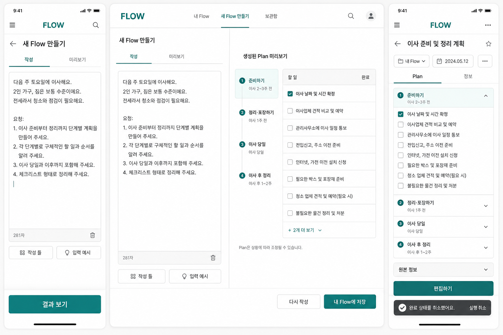
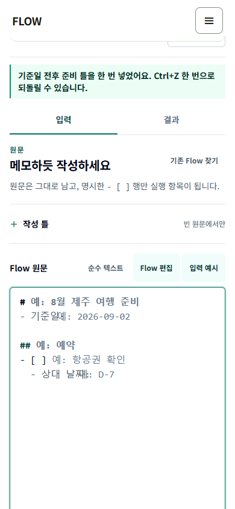
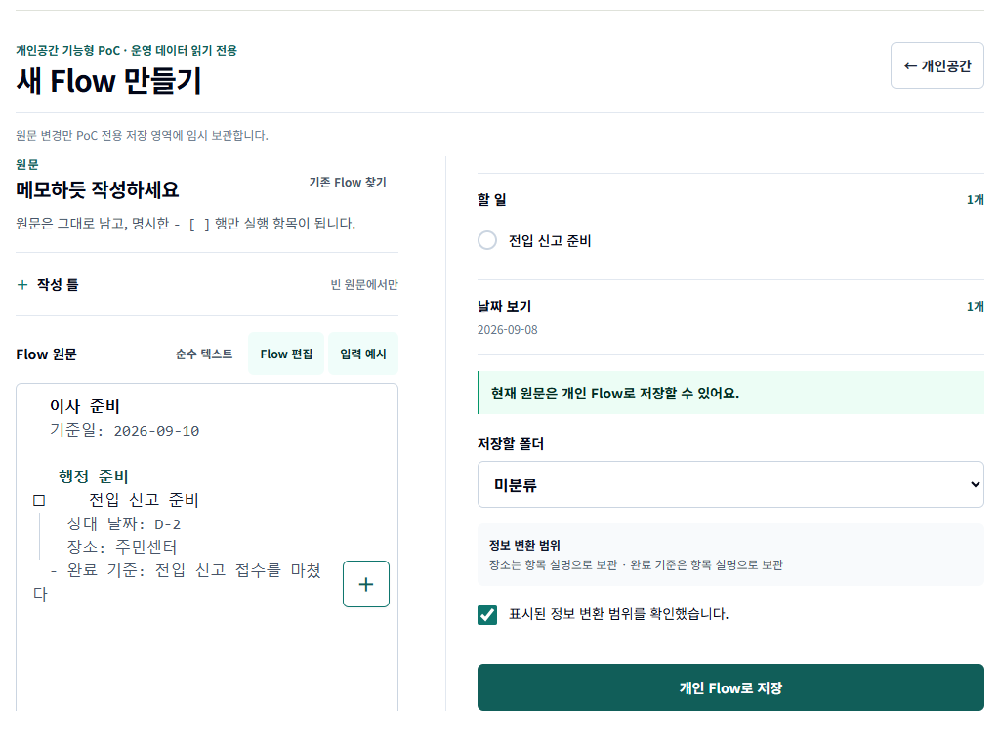
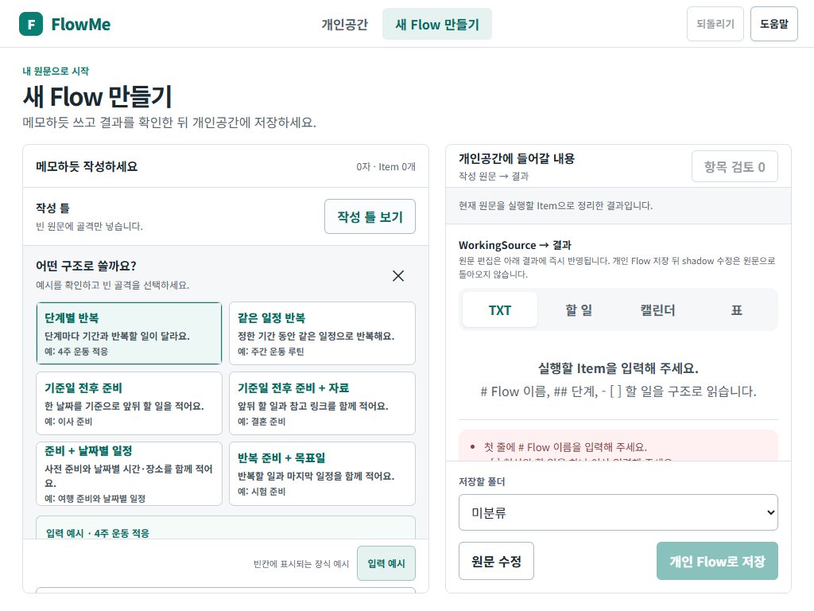

개인공간의 정보 구조
폴더, 오늘·주간·월간·날짜 미정, 빠른 할 일, 이동·완료·Undo를 담당합니다.
Product UX validation · 2026-09-03
v4.1 개인공간, Text Authoring, 기존 saved-plan 결과를 공통 Plan→Item 문법으로 연결하고, 기능이 되는지뿐 아니라 화면·상태·저장 경계까지 다시 판정한 리포트입니다.
01 · Source reconciliation
각 산출물을 화면 참고자료로만 소비하지 않고, 결정·동작·경계 단위의 요구로 분해했습니다. 서로 충돌할 때는 운영 데이터를 지키는 통합 청사진과 격리 PoC 경계가 우선합니다.
폴더, 오늘·주간·월간·날짜 미정, 빠른 할 일, 이동·완료·Undo를 담당합니다.
네 saved-plan origin, source 보존, 개인 수정, staged 편집과 한 번의 저장을 담당합니다.
빈 원문, 작성 틀, 입력 예시, 미리보기, 선택형 검토와 개인 Flow 저장을 담당합니다.
source는 투영만 하며 운영 writer를 호출하지 않습니다.
계획 제목·메모·날짜와 실행 상태를 분리합니다.
기술 배지와 경쟁 CTA를 기본 화면에서 걷어냅니다.
스크린샷은 실기 QA이며 사용자 검증이 아닙니다.

02 · Requirement trace
48개 미충족·부분 충족 항목을 이번 코드 개선, 회귀 확인, 실제 기기, 운영 결정, 후속 기능으로 나눴습니다. 필터는 범위를 숨길 뿐 원문 판정을 바꾸지 않습니다.
기술 문구, 경쟁 CTA, 공통 Item 상세·편집, 오류·취소·Undo 상태
React exact gate와 단일 HTML을 같은 헤더·상태·핵심 흐름으로 맞췄습니다.
Android Chrome, iOS Safari, 실제 가상 키보드, 화면 읽기
브라우저 자동화로 대체하지 않고 미실행으로 남깁니다.
내비게이션 명칭, 공개/개인 경계, 결과 범위와 운영 편입
PoC 임시 기본값을 운영 정책이나 schema로 승격하지 않습니다.
Sheet/TXT 전체 기능, AI, cloud, 외부 동기화, 고급 문법
핵심 루프 검증 뒤 별도 설계·개발 목표로 다룹니다.
정체성, prefix 저장, fail-closed, 기본 writer 차단
새 UI 수정이 기존 안전 모델을 깨지 않는지 확인합니다.
| 화면 / 기능 | v4.1 UI 요구 | 개발 1 요구 | 개발 2 요구 | 현재 통합 적용 | 판정 |
|---|---|---|---|---|---|
| 진입·gate | 기본 /my 보호 | 작성 시작점 | owner 분리 | /my와 /flows/new의 exact query, 잘못된 query fail-closed | 충족 |
| 개인공간 shell | 폴더·기간 IA | 저장 후 도착점 | 흰 본문·평면 목록 | 내부 PoC chrome 감산, 맥락 제목과 한 주행동 | 충족 |
| 빈 원문·작성 틀 | 새 Flow 연결 | 빈 문서 우선 | D2-045~053 | 여섯 틀, 전체 예시 미리보기, 명시 선택 시에만 scaffold 삽입 | 충족 |
| 원문 편집 | 새 Flow 진입 | 일반 메모 우선 | D2-029~055 | rawText owner 1개, ghost와 helper는 원문 밖, native Undo | 충족 |
| 미리보기·검토 | 기간 자동 노출 | 저장 전 확인 | D2-006·022·058 | 입력→결과 2-state, issue가 있을 때 선택형 검토 | 충족 |
| 저장 결과 | 개인공간으로 연결 | 명시적 materialize | D2-005 | 저장 뒤 form을 닫고 ‘개인공간에서 열기’ 하나만 표시 | 충족 |
| 원본·개인 경계 | 운영 데이터 read-only | 원문 보존 | A0-1·A0-4 | 원본 정보와 내 Flow 변경을 시각·저장 owner로 분리 | 충족 |
| 폴더 | 2단계·한 폴더 | 저장 폴더 선택 | 개인 metadata | Flow 소속, Item 상속, 삭제 시 미분류 이동 | 충족 |
| 오늘·주간·월간·미정 | 실행 목록 정본 | 날짜 결과 인계 | 계획/실행 날짜 구분 | effective date 기준으로 같은 Item을 여러 보기에서 투영 | 충족 |
| Flow 상세·편집 | 부모 Flow 맥락 | 작성본 raw source | staged Plan 편집 | source→내 Flow→Item 순서, 변경 요약 뒤 한 번 저장 | 충족 |
| Item 상세·편집 | 기간/Flow 연결 | 작성 항목 lineage | Plan→Item 공통 editor | 기간·결과·Flow에서 같은 Item 상세로 열고 parent draft에 반영 | 충족 |
| 빠른 할 일 | root 항목 생성 | 해당 없음 | Flow 없는 개인 항목 | 전용 상세·편집과 root transaction, Flow를 발명하지 않음 | 충족 |
| 이동·순서 | drag·메뉴·키보드 | 해당 없음 | 같은 transition 원칙 | 날짜·폴더·순서 입력이 하나의 순수 전이로 수렴 | 충족 |
| 완료·다시 열기 | status/completedAt | 해당 없음 | 결과 투영 일치 | Flow 보기와 기간 보기의 completion을 같은 ref로 공유 | 충족 |
| 오류·취소·Undo·reload | snapshot 복구 | 작성 draft 복원 | D2-049·052·058 | 무변경 0 write, 오류 rollback/retry, 성공 snapshot Undo와 reload | 충족 |
| Text·Todo·Calendar·TXT | 개인 실행 투영 | Todo·날짜 preview | D2-019~021 | 같은 ref/date/completion 확인. Sheet·download·reverse edit는 후속 | 부분·후속 |
개별 ID와 근거 파일은 전체 요구 추적표에서 확인할 수 있습니다.
03 · Before / after
전에는 PoC·mutation·read-only 같은 내부 설명과 여러 CTA가 콘텐츠보다 먼저 보였습니다. 이번에는 사용자의 현재 행동과 저장 결과가 먼저 읽히도록 재배치했습니다.




04 · Scenario verdict
각 항목은 클릭 가능 여부만 보지 않습니다. 화면 결과, state 변경 수, 새로고침 복구, 운영 bytes를 함께 판정합니다.
미분류 목록과 Flow 상세, 공통 Item 문법을 확인했습니다.
생성→날짜→폴더→Undo가 한 전이 모델을 씁니다.
부모 소속과 원본 일정은 유지하고 실행 위치만 바꿨습니다.
Flow 보기와 기간 보기에서 같은 결과를 확인했습니다.
drag·길게 누르기·메뉴·키보드가 같은 결과를 냈습니다.
같은 위치, Escape, pointer cancel, 저장 오류의 성공 mutation은 0건입니다.
마지막 성공 상태를 복원하고 손상 값은 fail-closed했습니다.
전체 전후 flow:* 운영 key/value bytes가 동일했습니다.
05 · Evidence layers
테스트 개수는 실제 실행 결과만 기록합니다. 스크린샷과 자동 브라우저 조작은 실제 기기 또는 관찰 사용자 검증으로 세지 않습니다.
정체성, 저장, 전이, 편집·receipt, UI 계약
single-file 모델과 동작 계약
runtime 57건과 이 리포트 2건
기존 dog source 검토기한 1건 실패
| 화면 | editor / CTA / 첫 할 일 | 가로 넘침 | console / page error | 판정 |
|---|---|---|---|---|
| 320×700 | 접근 가능·가림 0 | 0px | 0건 / 0건 | 통과 |
| 375×812 | 접근 가능·가림 0 | 0px | 0건 / 0건 | 통과 |
| 390×844 | 접근 가능·가림 0 | 0px | 0건 / 0건 | 통과 |
| 844×390 | 접근 가능·가림 0 | 0px | 0건 / 0건 | 통과 |
| 1024×768 | 접근 가능·가림 0 | 0px | 0건 / 0건 | 통과 |
| 1440×900 | 접근 가능·가림 0 | 0px | 0건 / 0건 | 통과 |
06 · Data boundary
UI가 더 자연스러워져도 저장 경계는 완화하지 않습니다. exact query가 아니거나 origin·payload가 잘못되면 기존 /my로 닫힙니다.
07 · Remaining decisions
통합 PoC에서 증명할 것과 운영 제품에서 결정할 것을 분리했습니다. 다음 목표는 이 목록의 소유자와 승인 조건을 고르는 일입니다.
터치, 주소창, 실제 키보드, safe area는 별도 기기 검사 필요.
개인공간/내 Flow/Plan 표현과 운영 /my 편입 시점을 결정해야 함.
Sheet/TXT 전체 기능, AI, cloud, export, 외부 동기화는 별도 목표.
설명 없이 작성→저장→실행을 완주하는지 아직 관찰하지 않음.